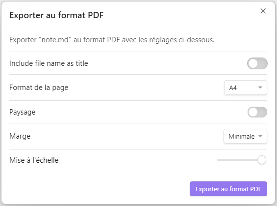

Exporter⧫
Partages⧫
Les notes d’Obsidian sont de simples fichiers de texte brut avec l’extension .md qui sont stockés dans le dossier du coffre Obsidian sur votre appareil. On peut donc y accéder directement depuis l’explorateur ou l’application de gestion de fichiers et les partager de là vers d’autres destinations iCloud, OneDrive, ou les espaces de stockage physique d’autres appareils via AirDrop par exemple, ou encore par mails…
Si la note ne fait référence qu’à des liens absolus, il suffit de partager une copie du fichier note.md.
En revanche, si la note intègre des pièces jointes du coffre, le plus simple alors est de les rassembler dans un même sous-dossier du coffre puis de compresser son contenu dans une archive.zip avant de la partager.
Si la note ou le dossier à partager se trouve sur iCloud, il est alors possible de les partager en mode collaboratif....
PDF & Cie⧫
Obsidian peut nativement exporter en note.pdf un fichier Markdown note.md.
Depuis la palette de commande, saisir pdf puis choisir Exporter en PDF.
Dans la fenêtre qui s’ouvre, régler les paramètres puis cliquer sur le bouton Exporter au format PDF.

Choisir le nom et l’emplacement pour enregistrer votre PDF et vérifier si le résultat convient…
Comment ajouter des sauts de page ?
Pour ajouter des sauts de page, une solution consiste à insérer, à l’endroit où vous souhaitez changer de page dans votre sortie PDF, le bout de code HTML suivant en laissant un saut de ligne avant et après.
<div style="page-break-after: always;"></div>
Si vous pensez avoir besoin d’insérer ce bout de code régulièrement, c’est l’occasion de faire un Snippet…
Diaporama⧫
Obsidian permet de réaliser très rapidement un diaporama à partir d’un simple fichier MarkDown note.md.
Pour les diaporamas, Obsidian s’appuie sur le Framework de présentation HTML open source reveal.js qui peut être utilisé indépendamment par ailleurs…
Diaporama basique⧫
Pour réaliser une présentation très simple, il faut activer dans les paramètres d’Obsidian le plugin principal Diapositiveset faire des traits horizontaux avec trois --- pour séparer les diapositives. Il suffit alors depuis la palette de commande de saisir le mot Diapo puis de choisir Diapositives: Démarrer la présentation ;
Exemple de code MarkDown pour tester
# Présentation Slides
Une petite démonstration
pour tester le module
**Diapositives.**
---
## Formatage du texte
On utilise la syntaxe MarkDown
pour formater le texte :
- **gras**
- *italique*
- ==surligné==
- ~~barré~~
---
!!! warning "On peut mettre des avertissements"
!!! example "Exemple :"
!!! tip "Truc à savoir :"
*On peut définir une touche du clavier pour lancer la présentation ==ou un bouton sur mobile==...*
---
## Diapositives
1. On met `---` entre deux diapositives ;
2) Et, **c'est tout !**
!!! success "Suffisant pour un :"
{ width="200" } [Pecha Kucha](https://fr.wikipedia.org/wiki/Pecha_Kucha)
Obsidian n’offre pas de possibilité d’export de ses diaporamas basiques vers d’autre format.
Sur iPad, il suffit de capturer ou d’enregistrer l’écran lors d’une présentation…
On peut ainsi produire une vidéo avec ou sans commentaire sonore.
Puis utiliser un Raccourcis de partage pour la convertir, l’ajouter au coffre et l’intégrer dans une note du jour.
Ou encore la déposer sur PeerTube pour l’intégrer en <iframe> tel que ci-dessous :
Une autre solution plus éconologique en terme de poids du fichier, consiste à produire un GIF à partir des captures d’écran des diapositives que l’on peut alors éventuellement annoter avant d’intégrer le fichier image.gifrésultant comme ci-dessous :

Diaporama avancé⧫
Pour réaliser une présentation plus évoluée avec beaucoup plus de fonctionnalités, il faut activer dans les paramètres d’Obsidian le modules complémentaire obsidian-advanced-slides (cf : la documentation du plugin)
Exemple de code MarkDown pour tester
# Présentation Slides
Une petite démonstration
pour tester le module
**Advanced Slides.**
---
## Formatage du texte
On utilise la syntaxe MarkDown
pour formater le texte :
- **gras**
+ *italique*
+ ==surligné==
+ ~~barré~~
!!! warning "On peut mettre des [avertissements](https://mszturc.github.io/obsidian-advanced-slides/basic-syntax/callouts/)"
+ inclinés,
+ mais pas imbriqués ;
<!-- element style="width:60%;font-size:24px" rotate="-5"-->
---
## Diapositives
1. Il suffit de mettre `---` entre deux diapositives horizontales ;
2) Et `--` entre deux diapositives verticales.
--
## Fragments
Les fragments précédents
sont obtenus avec les codes :
```markdown
- **gras**
+ *italique*
+ ==surligné==
+ ~~barré~~
```
et
```markdown
1. Il suffit de mettre `---` entre deux diapositives horizontales ;
2} Et `--` entre deux diapositives verticales.
```
On peut alors exporter la présentation au format pdf mais aussi en HTML ce qui permet de l’intégrer comme ci-dessous ou de coller un lien vers l’exemple de diaporama avancé en HTML
Synchroniser⧫
Obsidian propose une solution payante, Obsidian Sync pour synchroniser les données d’un coffre entre différents appareils. Cependant, il est aussi possible de le faire différemment…
iCloud⧫
Cf. documentation obsidian : iCloud
Pour synchroniser un coffre d’Obsidian entre différents appareils à travers iCloud, il faut créer sur iPad un nouveau coffre en activant l’option Strore in iCloud.
Les notes de ce coffre sont éditables hors connexion internet et les modifications seront automatiquement remontées vers iCloud Drive lorsque l’iPad sera connecté à nouveau.
GitHub⧫
Il est possible de synchroniser tout ou partie des données d’un coffre d’Obsidian entre différents appareils par l’intermédiaire de GitHub.
Se connecter à GitHub⧫
- Créer un compte sur GitHub (Sign up) depuis un navigateur à l’adresse https://github.com/ ;

Ou identifier vous (Sign in) si vous avez déjà un compte :

Créer un nouveau dépôt GitHub⧫
- A l’adresse https://github.com/new créer un nouveau répertoire de dépôt privé nommé, par exemple
mon_carnet_Obsidianet ajouter une description ;

- Cocher la case “Initialize this repository with a README” puis cliquer sur le bouton “Create repository”.
[!success] Voilà, vous faites maintenant parti d’un autre réseau social mondial celui des développeurs de code…
- Générer une clé d’identification sur GitHub pour paramétrer la synchronisation avec Obsidian sur votre iPad :
- Renseigner les champs :
Note= préciser à quel usage est destinée votre clé pour l’identifier par la suite ;Expiration= choisirCustompuis une date allant jusque la fin de l’année scolaire par exemple ;Select scope= cocherrepo,admin:repo_hook,gist;
- Cliquer sur le bouton “Generate token” ;
- Copier le code de votre clé pour pouvoir la réutiliser car elle ne sera plus visible ensuite…
- Renseigner les champs :
Sur iPad⧫
- Dans Obsidian, Ouvrir ou Créer un coffre ;
[!note] Remarque :
il peut être stocké sur iCloud ou juste en local sur votre iPad. - Créer un nouveau dossier nommé
Mon_carnetpour recevoir le contenu à synchroniser avec votre dépôt GitHub ;[!note] Remarque :
Cela permet que tous les dossiers et fichiers de votre coffre, y compris le dossier caché.obsidianne se retrouvent pas inutilement copiés dans votre dépôt. - Installer puis Activer le module complémentaire “Obsidian Git“ ;
- Depuis la palette de commande, saisir le mot
Initpuis choisirObsidian Git: Initialize a new repo; - Dans les options d’“Obsidian Git”, renseigner les champs :
Username on your git= saisir votre pseudo GitHub ;Personal access token= copier/coller la clé d’identification que vous venez de créer ;Author name for commit= saisir votre pseudo GitHub ;Author email for commit= saisir votre email GitHub ;Custom base path=Mon_carnet;
- Depuis la palette de commande, saisir le mot
Clonepuis choisirObsidian Git: Clone an existing remote repoet suivre les instructions :Enter remote URL= L’adresse de votre dépôt GitHub à cloner ;Enter directory for clone=Mon_carnet;
- Redémarrer Obsidian ;
- Editer le fichier
README.mdqui sera la vitrine de votre dépôt GitHub.[!note] Remarque :
Il est préférable dans ce fichier, de se restreindre au MarkDown à la sauce GitHub, qui est différent de celui que vous utilisez pour rédiger vosnotes.mddans Obsidian, notamment, il ne supporte pas les[[liens internes]]. - Glisser/déposer toutes les notes de votre coffre que vous souhaitez synchroniser dans GitHub ainsi que leurs pièces jointes dans le dossier
Mon_carnet; - Depuis la palette de commande, saisir le mot
Sourcepuis choisirObsidian Git: Open source control view;

- Appuyer sur les
+(1) en face des fichiers pour ajouter les modifications que vous voulez synchroniser à ce stade. - Commiter (2) puis pousser (3) les changements depuis Obsidian vers GitHub ;
- Vérifier la mise à jour des vos fichiers sur GitHub…
Sur PC Windows⧫
- Installer si ce n’est pas déjà fait git for windows

Assurez vous de permettre à Obsidian (3rd-party software) d’utiliser Git en ligne de commande…
- Dans Obsidian, Ouvrir ou Créer un coffre ;
- Créer un nouveau dossier nommé
Mon_carnetpour recevoir le contenu à synchroniser avec votre dépôt GitHub ;[!note] Remarque :
Cela permet que tous les dossiers et fichiers de votre coffre, y compris le dossier caché.obsidianne se retrouvent pas inutilement copiés dans votre dépôt. - Installer puis Activer le module complémentaire “Obsidian Git“ ;
- Depuis la palette de commande, saisir le mot
Initpuis choisirObsidian Git: Initialize a new repo; - Dans les options d’“Obsidian Git”, renseigner les champs :
- ???
Username on your git= saisir votre pseudo GitHub ; sauf si déjà défini globalement ??? - ???
Personal access token= copier/coller la clé d’identification que vous venez de créer ; sauf si déjà défini globalement ??? Author name for commit= saisir votre pseudo GitHub ;Author email for commit= saisir votre email GitHub ;Custom base path=Mon_carnet;
- ???
- Depuis la palette de commande, saisir le mot
Clonepuis choisirObsidian Git: Clone an existing remote repoet suivre les instructions :Enter remote URL= L’adresse de votre dépôt GitHub à cloner ;Enter directory for clone=Mon_carnet;
- Redémarrer Obsidian ;
- Editer le fichier
README.mdqui sera la vitrine de votre dépôt GitHub.[!note] Remarque :
Il est préférable dans ce fichier, de se restreindre au MarkDown à la sauce GitHub, qui est différent de celui que vous utilisez pour rédiger vosnotes.mddans Obsidian, notamment, il ne supporte pas les[[liens internes]]. - Glisser/déposer toutes les notes de votre coffre que vous souhaitez synchroniser dans GitHub ainsi que leurs pièces jointes dans le dossier
Mon_carnet; - Depuis la palette de commande, saisir le mot
Sourcepuis choisirObsidian Git: Open source control view;
- Appuyer sur les
+en face des fichiers (1) pour ajouter les modifications que vous voulez publier à ce stade. - Commiter (2) puis pousser (3) les changements depuis Obsidian vers GitHub ;
- Vérifier la mise à jour des vos fichiers sur GitHub…